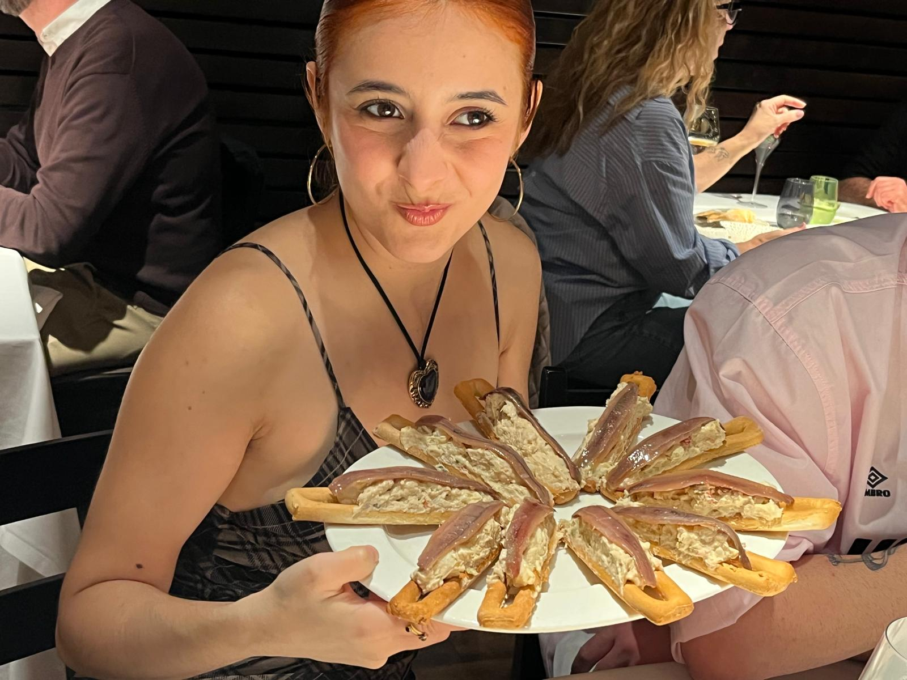

ART DIRECTOR AND CREATIVE ASSISTANT @ VÉLODROME

YO EN MI 25 CUMPLEAÑOS CON 10 MARINERAS :)
HOLA! Soy Dori Espín o Adoración Espín o Dorito o mil cosas más que me han llamado desde siempre. Tengo 25 años y soy de Murcia, el mejor lugar del mundo!!!! Estudié Publicidad y Relaciones Públicas en la Universidad de Murcia y Creatividad Integral en Brother Madrid, y aunque pensaba que la creatividad en publicidad sería mi cosa, siempre tuve un pie metido en la creatividad para artistas.
Empecé trabajado como freelance para daniel sabater, y ahora desarrollo conceptos y universos visuales en Velódrome. Trabajo en la ideación y desarrollo de videoclips, identidades visuales, portadas, visualizers y narrativas de lanzamiento. También en la conceptualización de liveshows, donde desarrollo escenografía, iluminación y narrativa visual.